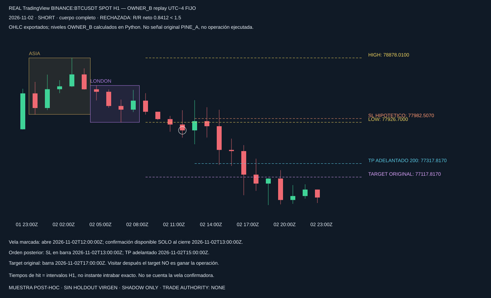
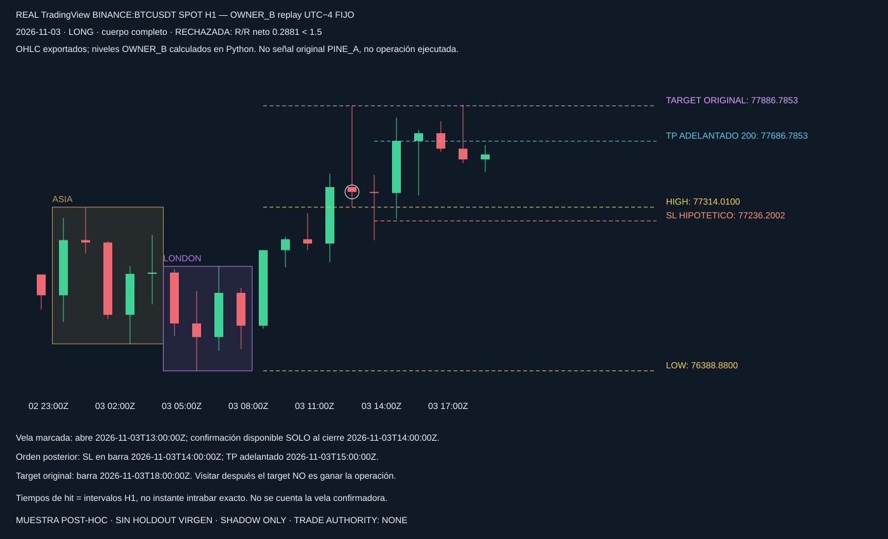

64 registros;33 comparados;2 ciclos PINE_A completos;0 diferencias. No se fuerza el primer ciclo.
OWNER_B:2 confirmaciones de cuerpo completo, ambas rechazadas por1.5R neto en escenario congelado; no se ejecutó PAPER.
Paridad y diferencias por campo · Resultados y límites OWNER_B


SHADOW ONLY · TRADE AUTHORITY: NONE · Sin rentabilidad validada